Algorithmic Trading with MATLAB®: Simple Lead/Lag EMA
This demo is an introduction to using MATLAB to develop and test a simple trading strategy using an exponential moving average.
Copyright 2010, The MathWorks, Inc. All rights reserved.
Contents
- Hey You: You should read readme.m before proceeding
- Load in some data (Excel)
- Develop a simple lead/lag technical indicator
- Sidebar: Single moving average
- Sidebar: Best parameter
- Estimate parameters over a range of values
- Evaluate performance on validation data
- Include trading costs
- Determine best trading frequency (considering intraday)
- Best performer on validation data
Hey You: You should read readme.m before proceeding
Load in some data (Excel)
Bund is a German bond future and data is sampled daily
data = xlsread('BundDaily.xls');
testPts = floor(0.8*length(data(:,5)));
BundClose = data(1:testPts,5);
BundCloseV = data(testPts+1:end,5);
Develop a simple lead/lag technical indicator
We'll use two exponentially weighted moving averages
[lead,lag]=movavg(BundClose,5,20,'e'); plot([BundClose,lead,lag]), grid on legend('Close','Lead','Lag','Location','Best')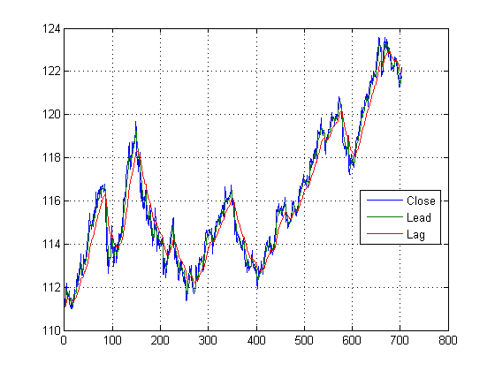
Develop a trading signal and performance measures. We'll assume 250 trading days per year.
s = zeros(size(BundClose)); s(lead>lag) = 1; % Buy (long) s(lead<lag) = -1; % Sell (short) r = [0; s(1:end-1).*diff(BundClose)]; % Return sh = sqrt(250)*sharpe(r,0); % Annual Sharpe Ratio
Plot results
ax(1) = subplot(2,1,1); plot([BundClose,lead,lag]); grid on legend('Close','Lead','Lag','Location','Best') title(['First Pass Results, Annual Sharpe Ratio = ',num2str(sh,3)]) ax(2) = subplot(2,1,2); plot([s,cumsum(r)]); grid on legend('Position','Cumulative Return','Location','Best') linkaxes(ax,'x')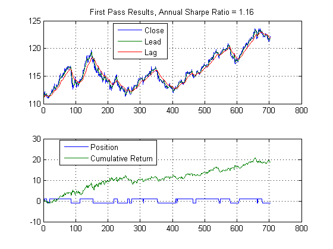
Sidebar: Single moving average
The case of a single moving average. We can use this function to do a single moving average by setting first parameter to 1.
annualScaling = sqrt(250); leadlag(BundClose,1,20,annualScaling)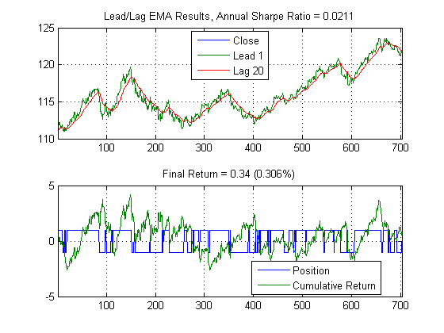
Sidebar: Best parameter
Perform a parameter sweep to identify the best setting.
sh = nan(100,1); for m = 2:100 [~,~,sh(m)] = leadlag(BundClose,1,m); end [~,mxInd] = max(sh); leadlag(BundClose,1,mxInd,annualScaling)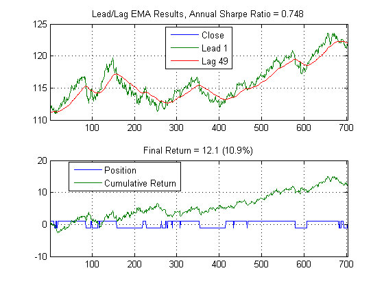
Estimate parameters over a range of values
Return to the two moving average case and identify the best one.
sh = nan(100,100); tic for n = 1:100 for m = n:100 [~,~,sh(n,m)] = leadlag(BundClose,n,m,annualScaling); end end toc
Elapsed time is 2.900633 seconds.
Plot results
figure surfc(sh), shading interp, lighting phong view([80 35]), light('pos',[0.5, -0.9, 0.05]) colorbar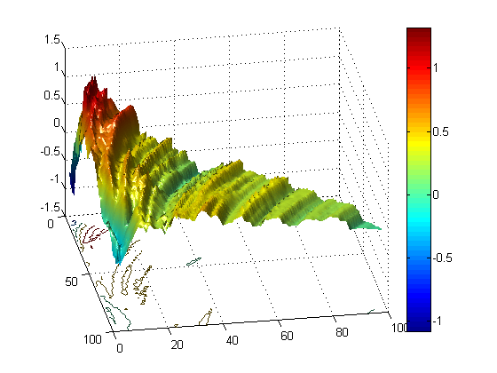
Plot best Sharpe Ratio
[maxSH,row] = max(sh); % max by column [maxSH,col] = max(maxSH); % max by row and column leadlag(BundClose,row(col),col,annualScaling)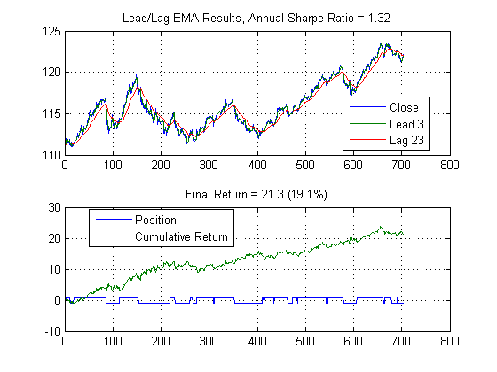
Evaluate performance on validation data
leadlag(BundCloseV,row(col),col,annualScaling)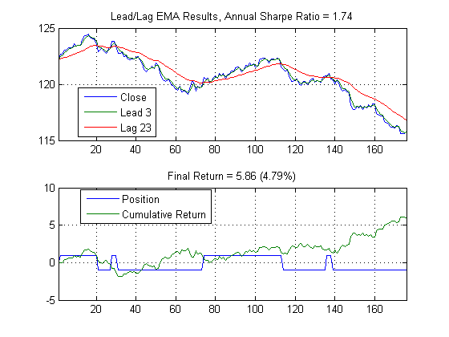
Include trading costs
We'll add the trading cost associated with the bid/ask spread. This will get us closer to the actual profit we could expect. As an exercise, you should extend this to account for additional trading costs and slippage considerations.
cost=0.01; % bid/ask spread range = {1:1:120,1:1:120}; annualScaling = sqrt(250); llfun =@(x) leadlagFun(x,BundClose,annualScaling,cost); tic [maxSharpe,param,sh,vars] = parameterSweep(llfun,range); toc figure surfc(vars{1},vars{2},sh), shading interp, lighting phong title(['Max Sharpe Ratio ',num2str(maxSharpe,3),... ' for Lead ',num2str(param(1)),' and Lag ',num2str(param(2))]); view([80 35]), light('pos',[0.5, -0.9, 0.05]) colorbar figure leadlag(BundCloseV,row(col),col,annualScaling,cost)
Elapsed time is 4.452227 seconds.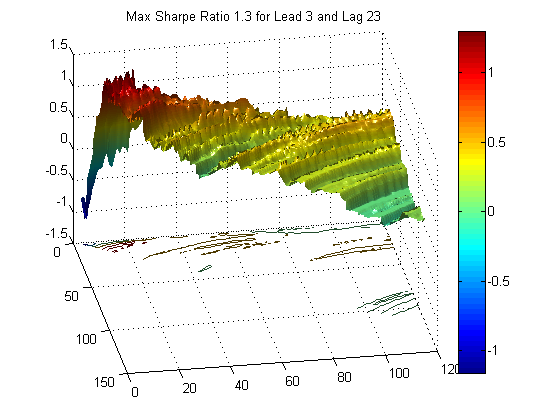 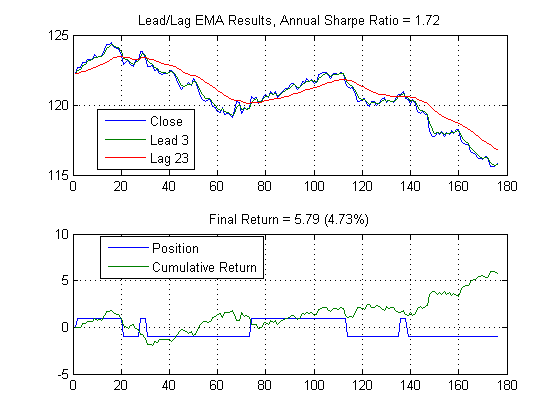
Determine best trading frequency (considering intraday)
Load in 1-minute data and break into test/validation data sets
close all load bund1min testPts = floor(0.8*length(data)); BundClose = data(1:testPts,4); BundCloseV = data(testPts+1:end,4); cost=0.01; % bid/ask spread
Best Lead/Lag model for minute data with frequency consideration. Use parallel computing to speed up the computations (parfor in leadlagFun)
type leadlagFun
function sh = leadlagFun(x,data,scaling,cost)
% define leadlag to accept vectorized inputs and return only sharpe ratio
%%
% Copyright 2010, The MathWorks, Inc.
% All rights reserved.
[row,col] = size(x);
sh = zeros(row,1);
t = length(data);
x = round(x);
if ~exist('scaling','var')
scaling = 1;
end
if ~exist('cost','var')
cost = 0;
end
% run simulation
parfor i = 1:row
if x(i,1) > x(i,2)
sh(i) = NaN;
%elseif x(i,1) > t || x(i,2) > t
%sh(i) = NaN;
else
if col > 2
tindex = 1:x(i,3):t;
% calculate scaling parameter for time sampling
sc = sqrt(scaling^2 / x(i,3));
else
tindex = 1:t;
sc = scaling;
end
[~,~,sh(i)] = leadlag(data(tindex), x(i,1), x(i,2),sc,cost);
end
end
Use my the cores on my laptop (a quadcore with hyperthreading, so 8 virtual cores).
matlabpool local 8
Destroying 1 pre-existing parallel job(s) created by matlabpool that were in the finished or failed state. Starting matlabpool using the 'local' configuration ... connected to 8 labs.
Perform the parameter sweep
seq = [1:20 10:10:100];
ts = [1:4 5:5:55 60:10:180 240 480];
range = {seq,seq,ts};
annualScaling = sqrt(250*11*60);
llfun =@(x) leadlagFun(x,BundClose,annualScaling,cost);
tic
[~,param,sh,xyz] = parameterSweep(llfun,range);
toc
leadlag(BundClose(1:param(3):end),param(1),param(2),...
sqrt(annualScaling^2/param(3)),cost)
xlabel(['Frequency (',num2str(param(3)),' minute intervals)'])
Elapsed time is 74.028335 seconds.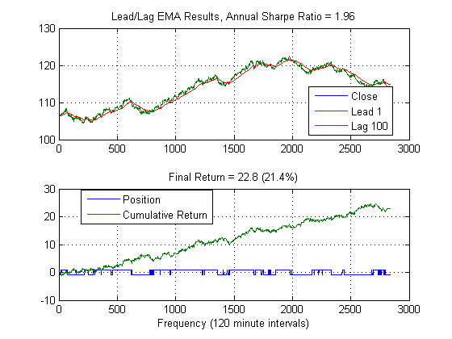
Plot iso-surface
figure
redvals = 1.2:0.1:1.9;
yelvals = 0.3:0.1:1;
bluevals=0:0.1:0.4;
isoplot(xyz{3},xyz{1},xyz{2},sh,redvals,yelvals,bluevals)
set(gca,'view',[-21, 18],'dataaspectratio',[3 1 3])
grid on, box on
% labels
title('Iso-surface of Sharpes ratios.','fontweight','bold')
zlabel('Slow Mov. Avg.','Fontweight','bold');
ylabel('Fast Mov. Avg.','Fontweight','bold');
xlabel('Frequency (minutes)','Fontweight','bold');
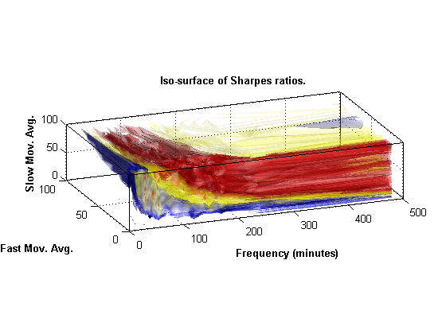 Note that the lag of 100 is on the boundary of our parameter sweep, let's extend the search a bit more. I ran this earlier and the max is around 30 minutes, so we'll narrow our sweep (for time considerations).
seq = [1:20 300:1:400];
ts = 25:50;
range = {seq,seq,ts};
annualScaling = sqrt(250*11*60);
llfun =@(x) leadlagFun(x,BundClose,annualScaling,cost);
tic
[maxSharpe,param,sh,xyz] = parameterSweep(llfun,range);
toc
param %#ok<NOPTS>
leadlag(BundClose(1:param(3):end),param(1),param(2),...
sqrt(annualScaling^2/param(3)),cost)
xlabel(['Frequency (',num2str(param(3)),' minute intervals)'])
Elapsed time is 100.845390 seconds.
param =
10 394 29
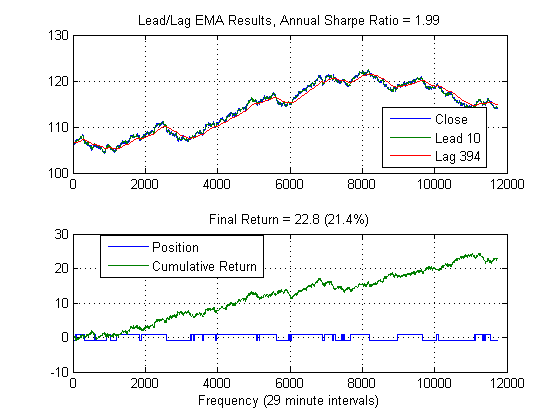 Best performer on validation data
This is the result if we applied it to the remaining 20% (validation set) of the data.
leadlag(BundCloseV(1:param(3):end),param(1),param(2),... sqrt(annualScaling^2/param(3)),cost) xlabel(['Frequency (',num2str(param(3)),' minute intervals)'])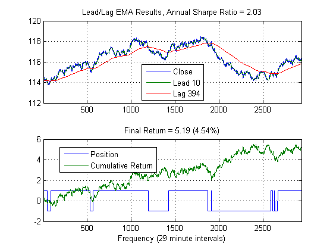
Let's now add an RSI indicator and see if we can do better (AlgoTradingDemo2.m).